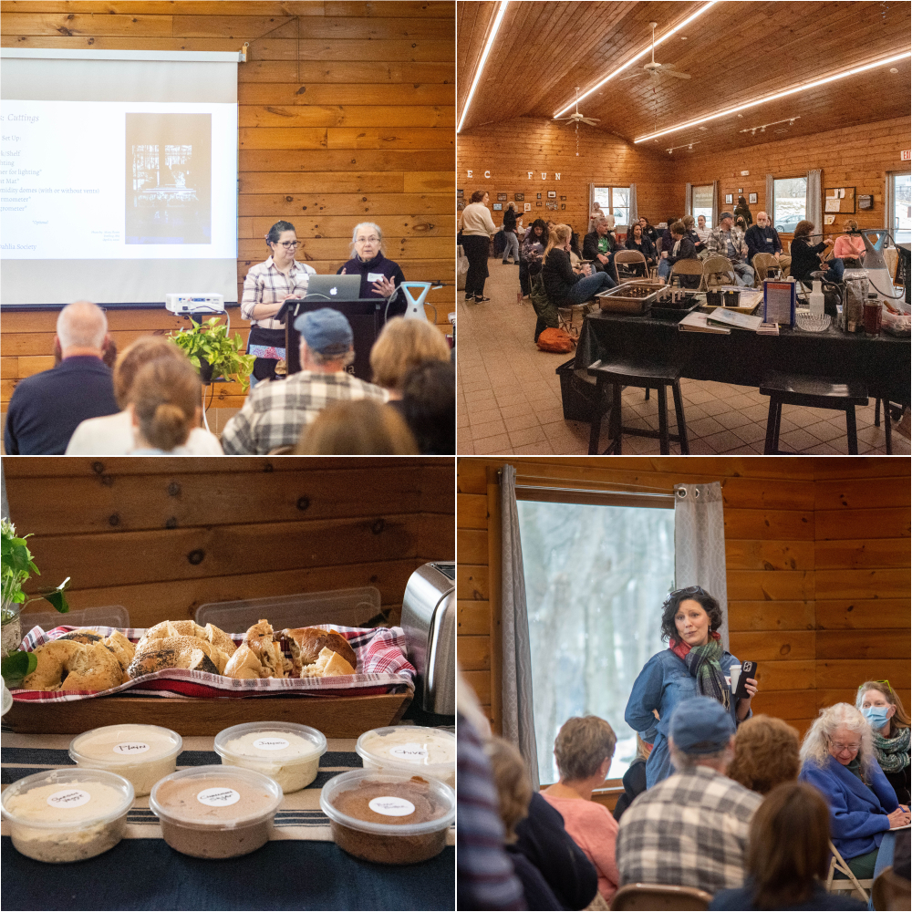
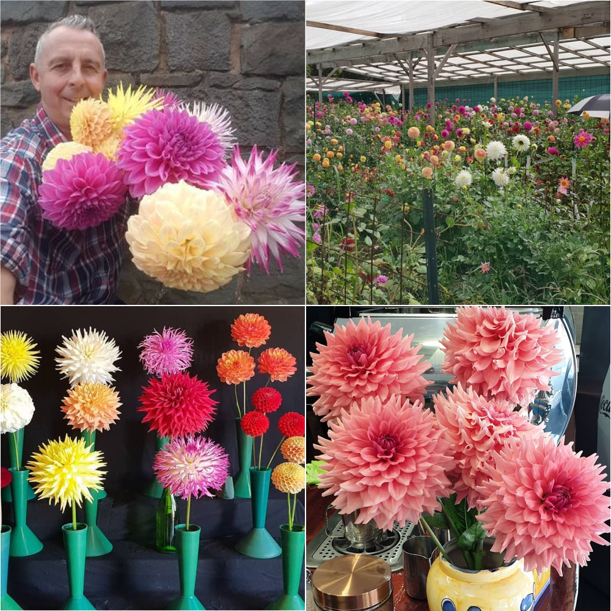
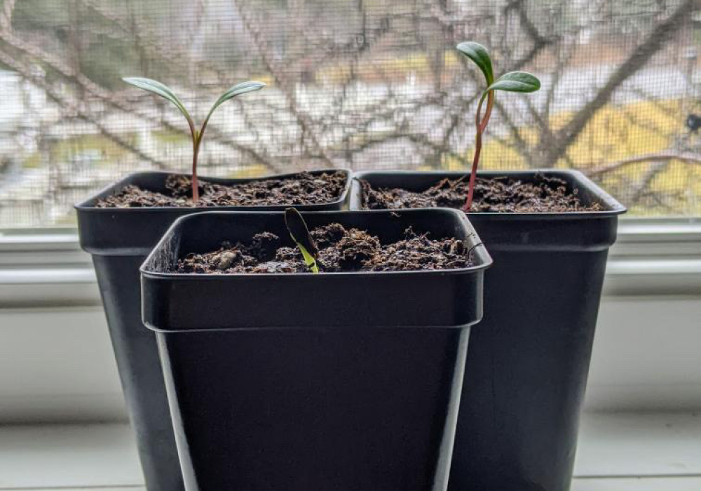
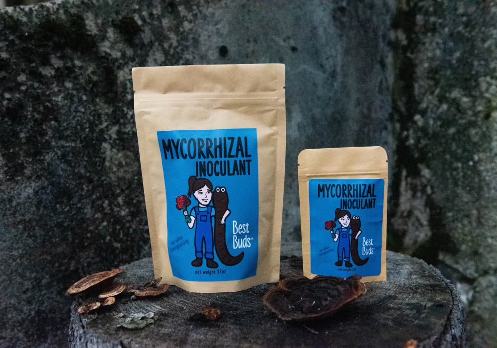
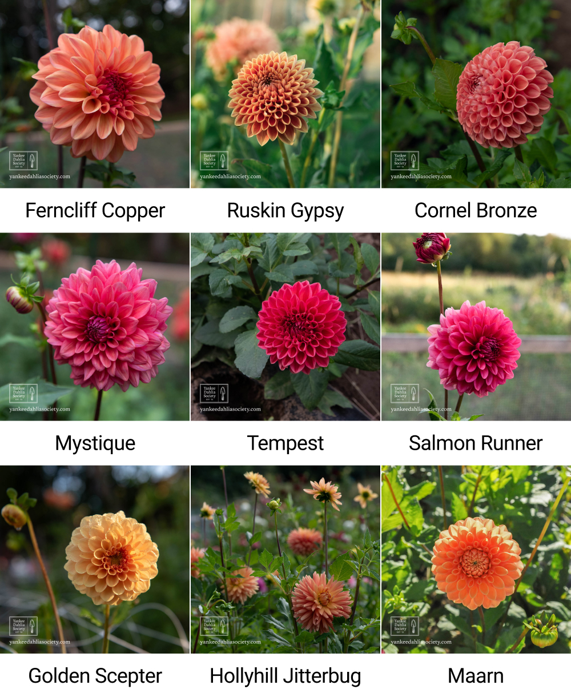
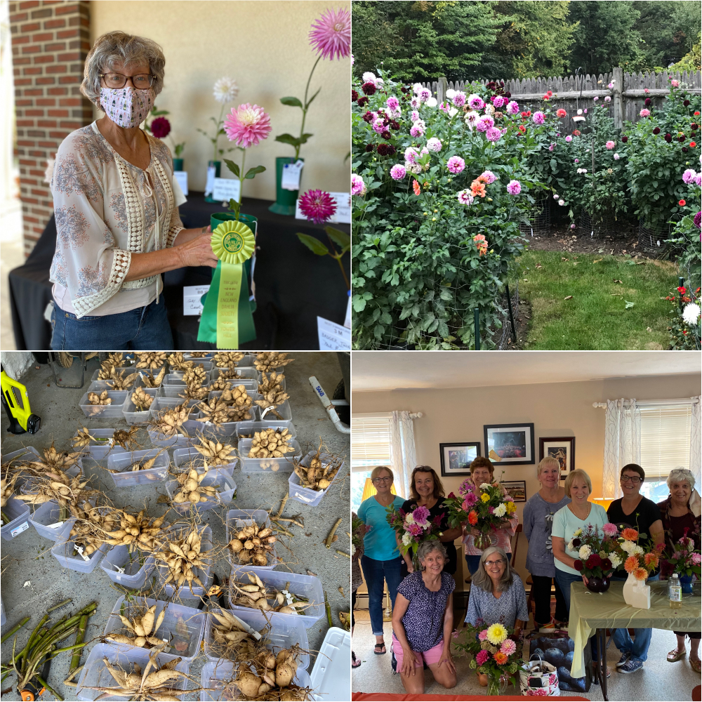
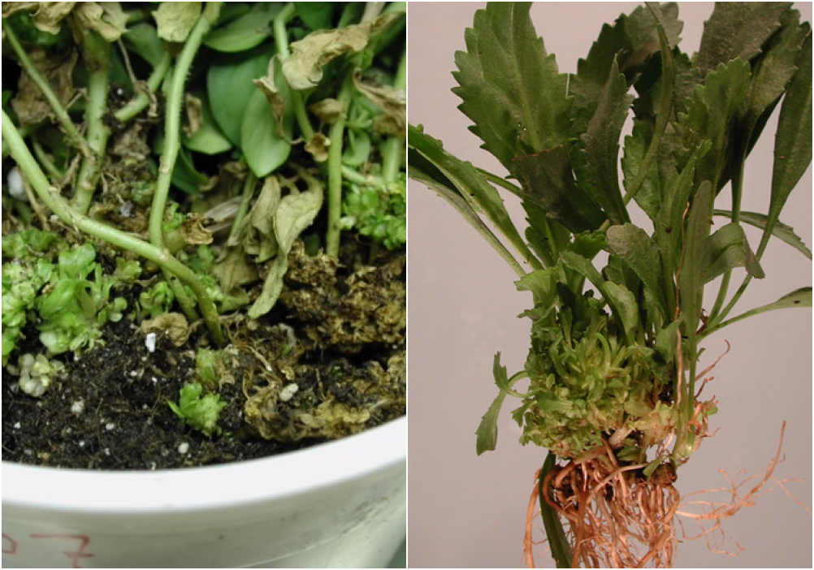
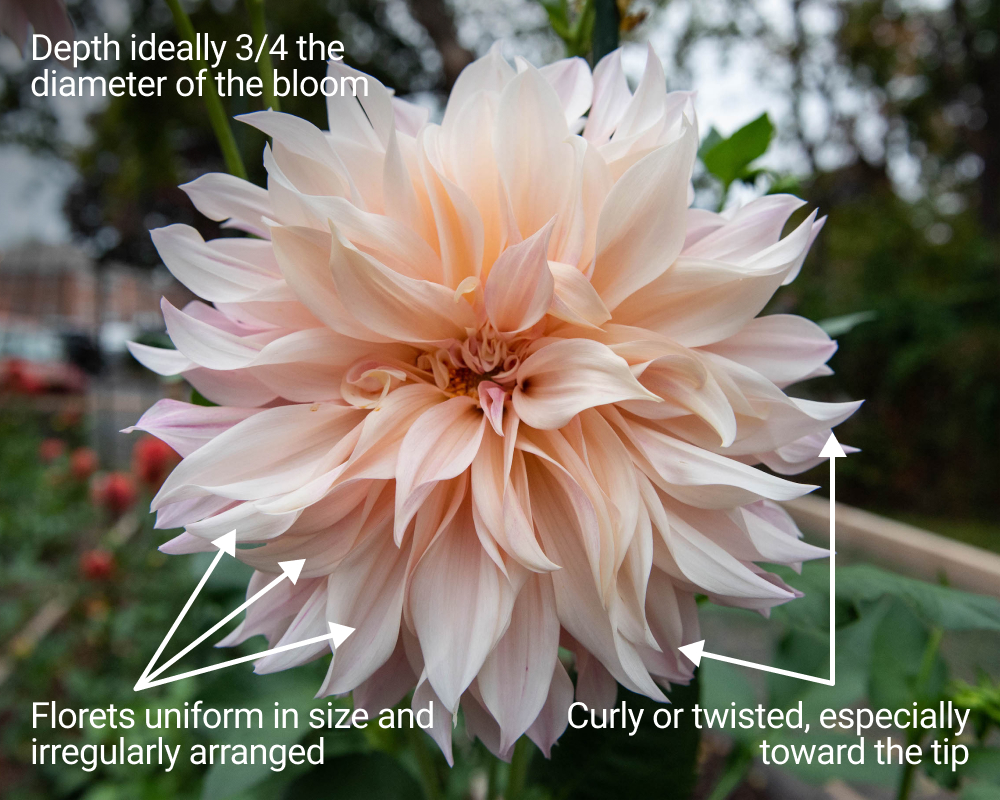

|
|
Hello dahlia friends!
It was great to see so many of you in person for
our monthly March meeting. We had several new
members join us for the first time and we were
excited to introduce everyone to each other and
had such a great time. Our club is truly about
our members, whether you are new to gardening
and dahlias or have several years of experience
it is the shared joy it brings to all of us
encouraging our growth and makes our YDS
community so special. We encourage you to be
sure to introduce yourself on Zoom or to someone
new every time we see each other in person.
Before you know it you will have a hundred new
dahlia friends!
We also love sharing and hope you’ve enjoyed
meeting other YDS members via our Member
Spotlights in each newsletter. Be ready to tell
us your story because before you know it Carol
will be asking you to be our Monthly Member
Spotlight!

Photos by: Misty Florez & John
Livornese
Next month our meeting is via Zoom. No driving
required and be sure to mark April 3rd on your
calendar. We look forward to having a morning
Zoom meeting with Special Guest Warren Vigor for
our April program. Check out the program details
below. In the meantime, our club calendar
includes another five more zoom meetings this
year, so be sure to join us and get the most out
of your YDS membership.
– Misty & Carol
|
|
Our Next Meeting
Dahlias from Down Under with Warren Vigor

Photo by: Warren Vigor
Our April meeting will be via Zoom. Join us with
a cup of coffee in the morning as we meet online
with other dahlia growers. Yankee Dahlia Society
is proud and honored to connect with dahlia
growers all around the world and share in the
joy dahlias bring.
Yankee Dahlia Society is absolutely excited for
everyone to meet Warren Vigor, an award winning
dahlia grower, hybridizer, and President of the
Dahlia Society of Australia. Dahlias are at
their peak in the Southern Hemisphere so it will
be fun to talk about the 2022 dahlia season with
Warren and get excited as ours is just about to
begin. We are thrilled that Warren will be in
the US and will be able to share with us images
of growing, hybridizing and showing dahlias.
Every year Warren grows 1,600 plants of which
1,000 are 1st, 2nd and 3rd year dahlia
seedlings, each needing to be evaluated for
specific qualities before they are introduced.
Growing dahlias from seeds is not difficult and
is very exciting especially when you discover a
real winning bloom. Warren exhibits and wins his
share of championships; he has shifted focus to
hybridize Dahlias of his own. He will give us
some tips on how he manages his hybridization
from seed to introduction. This year he has had
the great pleasure of winning championships that
have included some of his own seedlings in his
entries. Warren will share with us some of his
own WV introductions and some of the other
beautiful varieties that originated in
Australia. We are so very fortunate to call
Warren a friend and a supporter of YDS since the
very beginning. Be sure to join us and meet
Warren for an educational and sure to be
entertaining presentation.
 @warrenvigor
@warrenvigor
 Dahlia Society of Australia on Facebook
Dahlia Society of Australia on Facebook
 dahliasaustralia.org.au
dahliasaustralia.org.au
April 3rd Zoom Meeting
-
10:15 - 10:30 - Login & Say Hello - Meeting
will start promptly at 10:30 am
- 10:30 - 10:45 - Welcome & Update
-
10:45 - 11:45 - Presentation by Warren and
Q&A’s
-
11:45 - 12:00 - Mingle with Members and Bring
your Seasonal Dahlia Growing Q&A’s
Location: Zoom (virtual
meeting)
Date & Time: Sunday, April 3rd,
*10:30am - 12:00am (EST)
*Log in at 10:15am EST
|
|
Public Tuber Sale
May 15th Public Tuber Sale @ Massachusetts
Horticultural Society Gardens at Elm Bank
@masshort
Masshort on Facebook
masshort.org
Just in time for planting outdoors we will have
our 2022 YDS tuber sale at Massachusetts
Horticultural Society Gardens at Elm Bank. Rain
or Shine, the sale will be open to the public
and of course for any members that would like to
pick up a few more tubers. We will have
wonderful varieties available so please help us
get the word out. Selling tubers is a vital way
for the club to continue our wonderful
programming.
Volunteers Needed:
We will be looking for just a few volunteers to
help sell tubers and promote Yankee Dahlia
Society at our Public Sale at Elm Bank. If you
are interested in helping we would love to have
you. We will be prepping the day before. So even
if you can help out just a few hours each or
both days that would be greatly appreciated.
Please see the SignUp Genius Link to sign up.
2022 Volunteer Activities - SignUp Genius
- Date: Sunday, May 15th
- Set Up: 8:30am - 10:00am
- Sale: 10:00am - 3:00pm
- Breakdown: 3:00pm - 4:00pm
|
|
Member Post from Social Media
Inspired to sow dahlia seeds
It is so exciting to see the enthusiasm around
propagating dahlias from cuttings and growing
dahlias from seeds! We are so glad so many of
you who came to the March meeting were inspired
to go home and start some seeds that were given
out to everyone who attended. We were excited to
see that Kira is having some great results!

Photo by Kira Snyder
|
|
YDS Store
We’ve got you covered for your dahlia growing
supply needs:
Send an email to
info@yankeedahliasociety.com
Subject: Growing Supplies
Items can be picked up at the May 1st meeting or
email to coordinate a pickup with Misty or
Carol.
Best Buds Mycorrhizae

Photo by: Misty Florez
Mycorrhizae are beneficial fungi that colonize
plant roots and form a highly beneficial
symbiotic relationship with their host plant.
Best Buds Mycorrhizal Inoculant is a
super-concentrated mycorrhizal inoculant with a
single species endomycorrhizal fungi,
Rhizophagus intraradices. Best Buds Mycorrhizal
Inoculant supports healthy plant growth by:
Y.D.S. members have access through our shared
Google Drive to view the presentation. An
email was sent out early in the week with your
access. If you need assistance please reach
out to Misty.
- Increasing transplanting success
- Improved nutrient and water uptake
- Promoting extensive root systems
-
Protecting roots against harmful pathogens
We have two sizes of these microscopic dynamos
in our store, from Y.D.S. member
Best Buds Worm Castings
Email us to order some today!
info@yankeedahilasociety.com
Subject:
I’ll take a pack of Mycorrhizae
-
2.5 oz Best Buds Mycorrhizal Inoculant
($5.50/each)
-
12 oz Best Buds Mycorrhizal Inoculant
($20.00/each)
Y.D.S. Tuber Shop

Online Tuber Store is open to YDS Members. We
have lots of great varieties for cuttings and
for show. Get them before they're gone!
Anyone needing help with purchasing tubers
online can call or text for assistance. We are
happy to help.
Misty’s Cell 732-674-2087
Carol’s Cell 508-826-9214
Pickup or Shipping
Orders can be picked up during our May 1st in
person meeting at Spence Farm in Woburn, MA or
arranged with Misty and Carol personally. Let us
know when you would like to pick up via SignUp
Genius/email and we’ll make sure to have your
order ready.
We will be shipping orders out April 2nd.
Shipping fees will be calculated and billed
separately.
Pickup at Meeting or Shipping SignUp
More Tubers & New Varieties
We will have divided more tubers, gone through
more of our inventory and added them to the YDS
Tuber Store. We are making them available to
Y.D.S. members first! Don’t delay on any of your
remaining tuber purchases before we have our
public sale at Mass Hort on May 15th.
|
22 New Varieties
|
More Inventory Added
|
- 20th Avenue Sunset
- AC Rosebud
- Blackberry Ripple
- Bloomquist Butch G
- Bloomquist Mike
- Citron Du Cap
- Hamari Accord
- Irish Candy
- Kenora Challenger
- Lulu Island Mom
- Mexico
- Mingus Kyle D
- Myrtle’s Folly
- Platinum Blonde
- Sandia Brocade
- SB’s Red Baron
- Showcase Perfection
- Snowbound
- Spartacus
- Tomo
- Verrone’s Wilma
|
- Alfred Grille
- Bloomquist Goldilocks
- Bracken Sarah
- Brookside Snowball
- Chimacum Nadjae
- Day Dreamer
- Golden Scepter
- Hapet Granat
- Hollyhill Bill M
- Hollyhill Golden Boy
- Javier G
- Lemon Cheesecake
- Snoho Les
- Tahoma April
- Tempest
- Valley Porcupine
|
|
|
Member Spotlight
Carol Manning

Photography by: Carol Manning
@fizzed476 on instagram
Hi, I’m Carol Manning, a retired teacher and
honored to be asked to share my love for dahlias
with Y.D.S. I have been gardening for over 25
years, learning as I go. The reason I started
gardening was because I wanted to watch my two
boys out at play during the summer. This kept me
outside without letting them know I was watching
them. From a small front garden to 12 good sized
gardens, I have grown and learned a lot about
mother nature. I “blame” my friend Michelle for
introducing me to the amazing dahlia flower and
began to focus on dahlias about 15 years ago. I
figured I could increase the size of my garden
inexpensively by dividing dahlias. Well, the bug
hit and now I have over 130 dahlia plants in a
1⁄4 acre yard and it will be sure to increase
this year.
Each of my gardens have between 4 and 20 dahlias
in them. They are in sun and part shade but are
not on the North side of the house. I also grow
basic veggies from seed like peppers, tomato,
lettuce and cukes from seed. I scatter other
filler flowers like zinnia, false carrot, shasta
daisy, coxcomb, globe amaranth, balsam, hyacinth
bean and climbing spinach. Perennials like
astilbe, roses, baby’s breath, Lady’s Mantle,
peony, phlox, hostas, daylilies and grasses are
also grown around the yard. Each year of
planting is a learning experience to see where
each plant does well. Things change every year
in my yard. I love to garden because I’m in
amazement of mother nature, love the smell of
fresh soil, enjoy watching flowers bloom and the
friends I make that are real teammates are lots
of fun.
As for bunnies, voles and deer, they are a real
bother. Because of my rodent friends, I use a
rabbit fence around my dahlias. Sometimes the
rabbit fence surrounds the entire garden. I also
make 20” diameter and about 3-4 feet high cages
for those not fenced. The cages help stabilize
the dahlias and keep away those pesky rabbits.
They don't do much about the voles and deer
though. Currently, I have about 50 cages that I
have made for 5 gardens and 3 gardens surrounded
by full rabbit fences. I am very proud of my
compost area where I mix grass cuttings, dried
leaves, lime and veggie scraps. Our compost has
really made my garden soil very conducive to
growing dahlias and we have tons of it. Due to
the high price of water in Holden and water
conservation, I also collect water from our
house gutters into six 55 gallon barrels. I use
a sump pump to get the water out to deeply water
my dahlias.
My favorite dahlias are ALL dahlias because of
their beauty so choosing my favorite is tough.
There are so many choices of dahlias that each
year, more favorites emerge. I continue to look
for new types of dahlias. If I have to answer, I
would choose: I’m a Hottie, Linna, Patricia
Ann’s Sunset, Excentric, Chilson’s Pride,
Lemonade, Blackberry Ice, Flamingo, Alloway
Candy, Bluetiful, and probably Bridezilla.
Something unusual about my love for dahlias is
that I love to divide dahlias. Thanks to Y.D.S.,
I have had lots of chances to do just that. I
believe it might be the quiet and mindfulness of
dividing along with knowing the results of
growing even more dahlias that keeps me happy.
One of my favorite things to do is to give my
dahlias away to friends, neighbors and family.
This year I had a garden tour with 12 of my
gardening friends. They were able to cut any
flowers in the garden and arrange them in their
own vases in my spare room. One of our friends
knew about arranging and taught us about
decorating with flowers. The bouquets were
gorgeous! What a blast! I also sell a few
bouquets to benefit Spinal Muscular Atrophy, an
organization that researches the disease and
that benefits my friend's granddaughter.
I have just now started organizing my dahlias
and hope to give some tubers away. I will put
them in soil to start them then give them away
also. Tubers sometimes are intimidating to
novice gardeners so I start dahlias for them.
This year I am going to try to take cuttings of
dahlias that are in short supply. I am also
going to try to use netting for the dahlias that
I don’t put in cages. I am always learning and
can’t wait to learn more from my new friends at
Y.D.S. I have shown dahlias in the New England
Dahlia Show and won novice prizes my first year
with Hollyhill Black Beauty and Bahama Mama
(thank you Carol Palmer). Last year, I won with
Gay Princess but I don’t really like to show
dahlias and compete. It takes the fun out of it
for me.
I am extremely thankful to Yankee Dahlia Society
for teaching me so much about gardening and
letting me help in dividing dahlias. Everyone is
welcome to tour and cut dahlias at my house.
Just text me and come on over for a glass of
wine or tea and I will give you a tour!
|
|
Dahlia Tip
Help! Does My Tuber Have Leafy Gall?

Photos Courtesy of Melodie L. Putnam
With your tubers beginning to wake up and start
sprouting, it is important to check them to be
sure the growth of the sprouts is normal and
healthy, or whether there is evidence of
disease, leafy gall in particular. Leafy gall is
a fairly uncommon bacterial infection caused by
the bacterium Rhodococcus fascians. Relatively
little is currently known about it, except that
it is known to infect over 87 genera, including
dahlias, in at least 40 families (data from
2007), so the total has likely only increased
since then. Most of the current research being
done is focused on herbaceous perennials for the
nursery industry, with little to no research
being done specifically on dahlias. It is not
caused by a virus, but by bacteria that enter
into the plant tissue and cause an abnormal
growth response in the area around where they
enter the plant. The bacteria can be present on
the plant and plant parts without showing
symptoms, but at some point they need to enter
the plant tissue to begin causing symptoms.
Leafy gall does not appear to lead to the death
of the plant, but any infected plant is a source
of possible contamination of surrounding plants,
and should be disposed of in the trash right
away.
Symptoms
The common general symptoms of R. fascians
infection are the proliferation of an abnormally
large number of stunted, thickened, only
partially developed shoots, often (but not
always) from the base of the stems. Photo 1
shows the small early proliferation of shoots
coming from the base of the stems of a petunia
plant. Photo 2 shows a similar tightly packed
proliferation of shoots at the base of a
leucanthemum, but at a later stage. You can
clearly see the difference in size between the
abnormal small infected shoots and the adjacent
normal sized shoot growth in Photo 2. No
reliable photos of a dahlia with clinically
confirmed leafy gall could be found, but if it
looks like the tuber is sprouting dozens or even
hundreds of new shoots, that remain small,
tightly packed and somewhat deformed and don’t
develop to a normal size, leafy gall could
certainly be suspected. However, unless the
plant is clinically tested for the presence of
the bacteria, a diagnosis of leafy gall remains
conjecture, since there are other causes of
similar-looking symptoms that are not due to the
R. fascians bacteria.
Transmission
-
Water splash: The bacteria can be
spread rather easily by water splash, and they
can remain detectable in water for at least
several months . Avoid watering from above
with new plants to keep any potential bacteria
present on the plants from spreading via water
splash to adjacent plants.
-
Clonal propagation such as cuttings or
tissue culture:
Infected tubers are likely to produce infected
cuttings, because even though the bacteria
does not appear to be systemic, meaning it may
not spread into and infect every part of the
plant, R. fascians has been detected in the
lab up to several inches away from the
concentration of the leafy gall growth area.
-
Contaminated cutting tools: Experiments
have shown that the bacteria can be
transferred to cutting tools used to cut
infected plant material. Tools can be
disinfected with either a quaternary ammonium
product, or 70% (or higher) isopropyl or
ethanol alcohol. Contact time with the
disinfectant should be at least three minutes.
-
Insects or by seeds: It does not appear
to be presently known whether the bacteria can
be transmitted by insects, or within dahlia
seeds, although it has been shown to be
transmitted in pea seeds.
Treatment
There is no treatment or cure for leafy gall.
Careful inspection and observation of your
plants, and throwing out any plants or tubers
that are or may appear to be infected is the
best prevention, along with a standard practice
of always disinfecting your tools between plants
as recommended by the American Dahlia Society.
Can I plant again in that area?
Research has shown that R. fascians does not
tend to be widely distributed in the soil,
indicating that it is more likely that it comes
in with new already infected plant material.
Further research has demonstrated that the
bacteria do not appear to persist in soil that
has no plant material present. In theory, this
means that once all your tubers have been
harvested and there are no more plants for the
bacteria to propagate on or in, it would not
survive in your soil. Still, until more research
is done about the persistence of the bacteria in
soil, and more is known about leafy gall, it is
a good practice to keep tubers from any new
source away from your stock that you are sure is
free of the disease for a full season or growing
and storage, until you are more certain the
disease is not present, and to inspect all your
dahlia plants on a regular basis.
Sources: Oregon State University,
College of Agricultural Sciences, OSU Plant
Clinic
https://bpp.oregonstate.edu/plant-clinic/plant-diseases, Royal Horticultural Society, UK
https://www.rhs.org.uk/disease/leafy-gall
Melodie Putnam, personal communication
|
|
Dahlia Forms
Informal Decorative
Variety: Cafe Au Lait

Photography by: Misty Florez
|
|
2022 Volunteer Activities & Dates
http://www.signupgenius.com/tabs/13577D605A1CDEBC1AF6-april
We have a new 2022 monthly schedule created in
SignUp Genius to view and signup for club
activities. This link will be “The” Y.D.S.
member volunteer link for the whole year. So
save the link in your Bookmark bar so you are
able to reference it easily. It is a working
document so dates and times will be added as we
move through the calendar and growing season.
Volunteer Hours are flexible. Come for a portion
of the time or come for the whole time. Knowing
when we will have volunteers that have signed up
will help us to anticipate and make plans.
Please feel free to edit a signup as needed.
Sign up the day before or remove yourself from a
signup if something comes up.
Don’t see a day/time on the calendar but you
have time to help? Please reach out and let us
know your availability and if there is something
you would like to help with. We always have a
project in the works and appreciate our members’
support to have everything running smoothly.
Please Note: Some dates/times may change.
If you have signed up for an event and a date or
time is changed you will be notified via SignUp
Genius email.
|
|
2022 Y.D.S. Photography Contest Committee
We are looking for Y.D.S. members to join the
2022 Photography Contest Committee. If you are
interested in working with Misty & Carol to
chair the Photography Contest please reach out.
We would like to get the planning underway
before the gets into full swing.
|
|
Dahlia Tuber Auction at the Y.D.S. May 1st
Meeting
In addition to the wonderful program we will
have in May we will also have a dahlia tuber
auction and dahlia tuber raffle for some of the
highly desirable and hard to get tubers. Thank
you to Chau for donating tubers to the auction!
- Salish Twilight Girl
- Westerton Ella Grace
- KA’s Khaleesi
- Peaches N’ Cream
|
|
|
Upcoming Meetings & Events
April 3rd: Zoom Meeting -
Dahlias from Down Under with Warren Vigor
May 6: Dahlia Hybridizing,
Dahlia Sports & Seed Collecting with Y.D.S
member Andrea Campbell
@ Spence Farm, 41 Wyman Street, Woburn, MA
(11am-1pm)
June 26th: Zoom Meeting -
With a special guest speaker
|
|
|
|
|
|
|
|